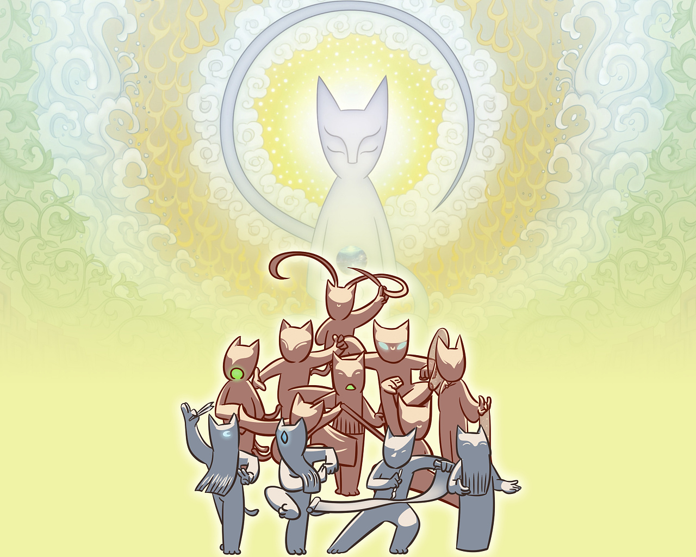
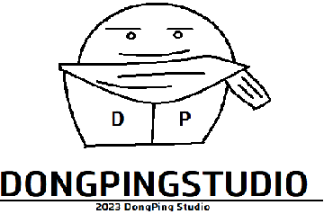

<head>
	<body background="宫廷樱花星空图.png"
	      style="background-repeat: no-repeat;
	      background-attachment: fixed;
	      background-size: 100% 100%;"
		  >
	</body>
<!-- this is 东平制造  BiliBili:会python的东平-->
</head><br><br><br><br><br><br><br><br><br><br>
<div align="center" style="color: #ffffff;">
	<h1>京剧猫同人作品网站</h1>
	<p>-==京剧猫同猫站永久开放活动==-</p>
	<p>收集各种京剧猫同人二创作品，还会为您的作品定制网页代码文件。</p>
	<p>完全免费，不收取任何费用，只有热爱与信念。</p>
	<a href="京剧猫猫民中心.html">
		<button style="border-radius: 0.3cm;box-shadow: 2px 6px 6px gray;background: transparent;border-width: 0px;color: #00d8e3;">
			返回京剧猫同猫站
		</button>
	</a><br><br><br><br><br><br><br><p style="#ffffff">©东平工作室</p>
</div><br><hr><br>
<div align="center" style="background-color: #ffffff;border-radius: 0.2cm;box-shadow: 2px 6px 6px gray;">
	<div style="background: transparent;"><br>
	
	</div><br>
	<h1>作品社区：</h1>
	<div  style="display: flex;">&emsp;
		<div style="border-radius: 0.2cm;box-shadow: 2px 10px 10px gray;">
			<br><br>&emsp;&emsp;&emsp;
			京剧猫同人作：身宗往事
			&emsp;&emsp;&emsp;<br><br>
			&emsp;&emsp;<br><br>
			<a href="https://www.bilibili.com/video/BV1ZC4y1w7tf/?spm_id_from=333.337.search-card.all.click">查看详情</a>
			<br><br>
		</div>
	</div><br><br>
</div><br><br>
<p style="text-align: center;color: aliceblue;">©东平工作室</p>
<div style="background-color:#56829a ;color: aliceblue;">
	技术支持：哔哩哔哩，HTML5<br>
	
</div>